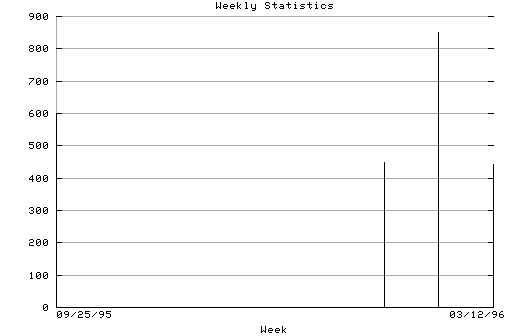

HTTP Server Weekly Statistics
Covers: 09/27/95 to 03/11/96 (167 days).
All dates are in local time.
Week of 09/25/95: 293 : ###### Week of 10/02/95: 295 : ###### Week of 10/09/95: 598 : ############ Week of 10/16/95: 501 : ########## Week of 10/23/95: 495 : ########## Week of 10/30/95: 341 : ####### Week of 10/29/95: 448 : ######### Week of 11/06/95: 850 : ################# Week of 11/13/95: 596 : ############ Week of 11/20/95: 507 : ########## Week of 11/27/95: 349 : ####### Week of 12/04/95: 524 : ########## Week of 12/11/95: 462 : ######### Week of 12/18/95: 257 : ##### Week of 12/25/95: 325 : ####### Week of 01/01/96: 391 : ######## Week of 01/08/96: 397 : ######## Week of 01/15/96: 532 : ########### Week of 01/22/96: 396 : ######## Week of 01/29/96: 383 : ######## Week of 02/05/96: 505 : ########## Week of 02/12/96: 484 : ########## Week of 02/19/96: 488 : ########## Week of 02/26/96: 570 : ########### Week of 03/05/96: 443 : ######### Week of 03/12/96: 2 :

Statistics generated at Mon Mar 11 03:12:07 MET 1996, (C) Schibsted Nett AS, 1995.